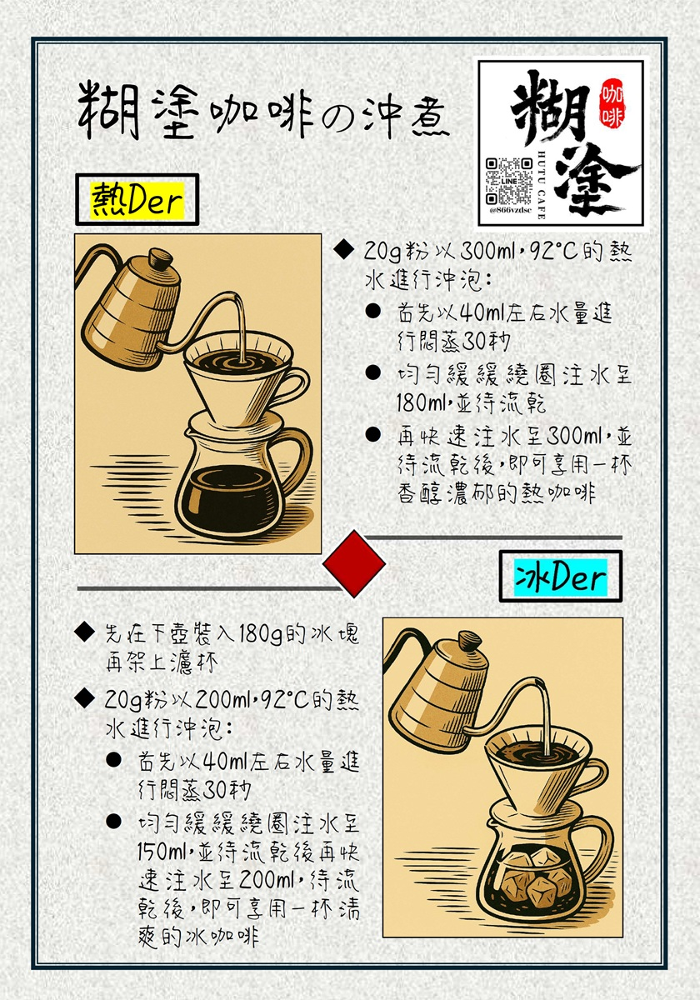
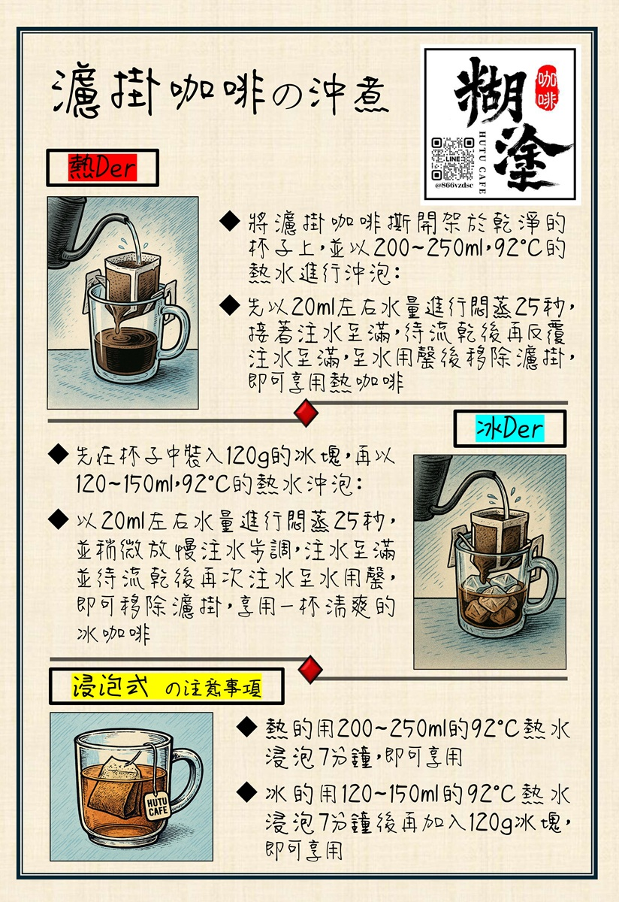
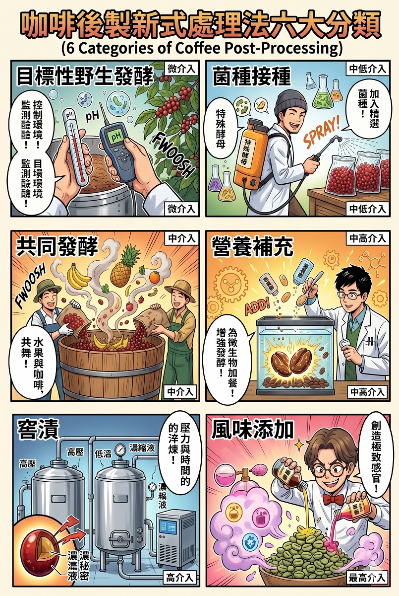

糊塗咖啡 HUTU CAFE
職人嚴選 ‧ 極致烘焙 ‧
 @hutucafe
@hutucafe
職人嚴選 ‧ 極致烘焙 ‧
 @hutucafe
@hutucafe
好的咖啡豆需要合適的萃取方式，為您附上糊塗咖啡專屬的手沖與濾掛咖啡沖煮指南。


SCA 精品咖啡協會（Specialty Coffee Association）為應對日益多樣的創新處理技術，確立了咖啡後製六大發酵框架。此分類以「發酵控制」為核心，從強調風土條件、無人為添加菌種的「目標性野生發酵」開始；依序是人為加入特定菌種導向特定風味的「菌種接種」；咖啡豆與水果、香料共同發酵的「共同發酵」；以及添加糖、果汁等以增強微生物活性的「營養補充」。
後兩種方法——浸泡於特殊液體中直接吸取風味的「窨漬處理」，以及直接添加人工或天然香精的「調味咖啡」——則更偏向風味的「添加」。前四種方法專注於微生物對咖啡果膠的影響，後兩者則接近風味加工，皆能協助業界建立風味探索的共識。
